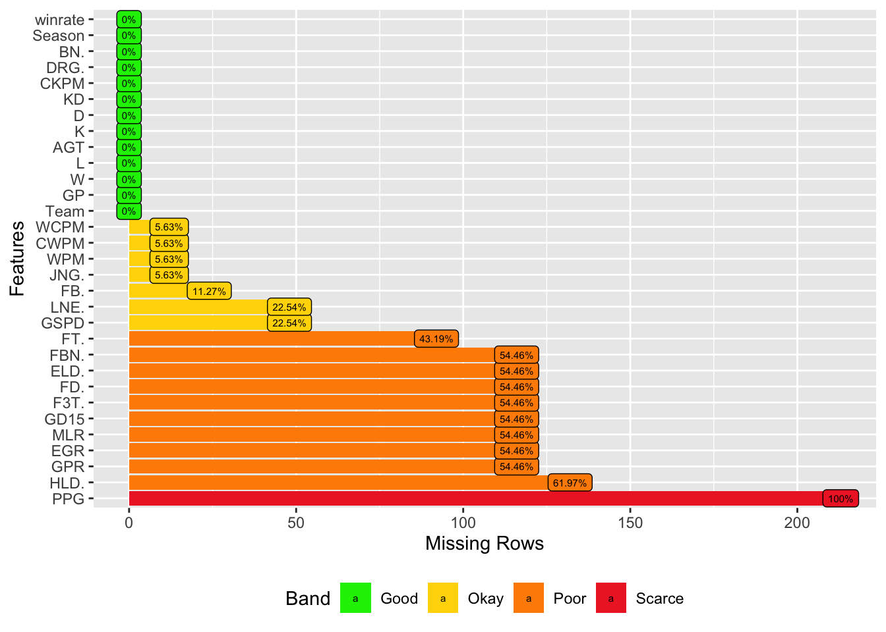

Chapter 3 Data
All of our data comes from three sources:
LPL official data webpage;
Fandom Wiki;
Oracle Exilar.
The data of LPL related all comes from LPL official data webpage.
There is no public official data webpage for statistics of tournaments from other divisions.
From LOL esports offical’s statements:
“Last year, we rolled out the LoL Esports Data Portal to Riot-run professional LoL Esports regions, debuting the private and secure scrim data feature. Now, the LDP also supports community use cases, such as Leaguepedia and Oracle’s Elixir, by providing scalable and sustainable access to data such as match history data, replays, and more…”
Fandom Wiki and Oracle Exilar are officially warrented community use sites by LOL esports offical.
3.1 Sources
3.1.1 LPL
We collected statistics for LPL from LPL offical data webpage. The website url is https://lpl.qq.com/es/data/.
Url for 2022 spring stat: https://lpl.qq.com/esnew/data/rank.shtml?iGameId=167&sGameType=1,5
Url for 2022 summer stat: https://lpl.qq.com/esnew/data/rank.shtml?iGameId=167&sGameType=7,8,9 …..
There includes teams stat, players’ personal stat, champion stat for each season.
3.1.1.1 LPL team stat
Firstly, We collected statistics for LPL teams’ performances from 2016 to 2022 game seasons.
3.1.2 Other divisions
3.1.2.1 Player stats
We collected Player stats for 4 major divisions from most recent season from Fandom Wiki. The url is (for example devision ‘ABC’):https://lol.fandom.com/wiki/ABC/2022_Season/Summer_Season/Player_Statistics
3.1.2.2 Champion stats
We collected champion stats for 4 major divisions from most recent season from Fandom Wiki. The url is (for example devision ‘ABC’):https://lol.fandom.com/wiki/ABC/2022_Season/Summer_Season/Champion_Statistics
3.1.2.3 Faker (one famous player) stat
We collected statistics for player “Faker” from Oracle Exilar. The website is: https://oracleselixir.com/player/Faker/statsByYear
3.2 Cleaning / transformation
3.2.1 LPL
For all data collected from LPL website, prior to importing the data, we modified the csv files by translating Chinese into corresponding English terms.
3.2.2 Other divisions
As we are reading from an html, the datawill contain extra information we do not need, so we will modify by slicing up the list and change column names, and add division name for both champion and player statistics.
3.2.3 All dataset
For all of datasets above, there are stats that have numerical meaning but appears to be in character data type.
For example, wining rate in all datasets is character data type with form “xx.xx%”.
As there are many columns in different datasets that has this property, and we will not necessarily use all of them, so we will convert those values into numerical values when needed. The following is an example of code for transformation:
3.3 Missing value analysis
As its really hard to collect game statistics (these statistics are often summary of individual acts player performs over the game), some columns might miss values depends on the season if no one is there to collect those values, the following is the missing value charts for the data sets we eventually used to construct the graphs.
3.3.1 LPL team stat
 Notice that those most important columns, green zone, like wining rate, KD, have no missing values since these are decisive data of a game so for every seasons, they will be collected and computed.
While for other columns, all rows in some specific seasons were not collected and computed at all. PPG was never collected in all seasons from 2016 to 2022.